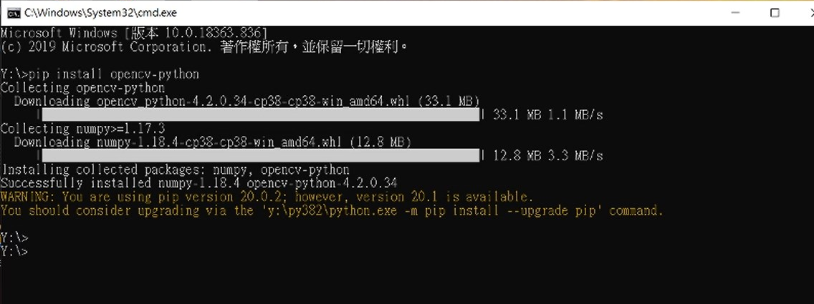
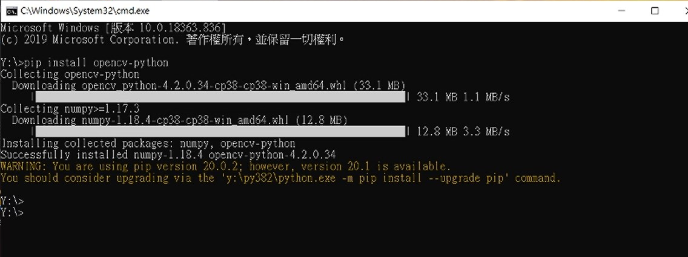
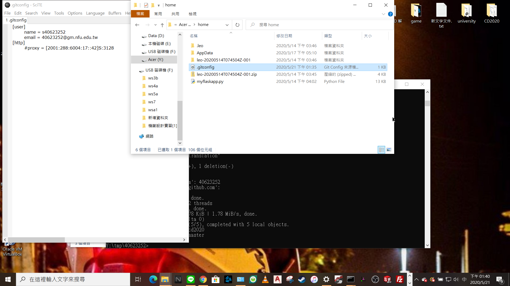

Week6-9 <<
Previous Next >> Week15-18
Week10-14
期中報告
w10開會紀錄:
topic2:
coppeliasim:40723221
MSModelingAndTFApproaches.pdf. 207頁:7人
40723249
40623117
40723221
40723228
40723236
40723237
40723243
MechatronicDesignCases.pdf. 46頁:2人
40723222
40723244
topic3:
MechaFutureAndChallenges.pdf. 38頁:2人
40623252
40523253
MechaEducFutureNeed.pdf. 20頁:1人
40723240
參考資料:
CMS:http://mde.tw/cd2020pj1/content/CMS.html
google用戶設置影片:https://drive.google.com/file/d/1G4MzXUIbNRK7z2XdjtxXzhX51zHHwq85/view?usp=sharing
開會紀錄影片:
google用戶端登入程序說明及疑難排解{影片經過加速處理}
1.
Log in to your google account {school's}
2.
Go to https://console.developers.google.com
3.
Create a Google API project and accept the required project
4.
Implement and enable Google's API
5.
Select the consent button in Google Domain API
6.
Choose internal or {external} users to add new application porgram
7
Enter the credentials under API and service
8.
Create credentials of type "OAuth 2.0 Client ID" for web applications
9.
(Set URL) The authorized JavaScript is: https: // localhost: 8443
10.
Define the URI as: https: // localhost: 8443 / login / google /
11.
Save oauth_gm.txt
12.
Open leo to change the name of the txt file named scrum in the config, and press save and darwROC after the modification is completed
13.open https://localhost:8443
14.test the end
GOOGLE 用戶端影片參考
 

For ubuntu settings explain.
1. Download ubuntu
2. Add a NAT network to your favorite network
3. Import the ubuntu you just downloaded
4. The add-on setting in the network in settings is set to host-only
5. Start ubuntu
6. Password kmol2020
7. Click activites on the upper right and click show application
8. Click LX terminal
9. Enter xterm &
10. Enter ls to display data
11. Press ctrl + right button to select the size of the window
12. Enter cd coppeliasim4_rev4 in the folder
13. Enter ls to view the information in the folder
14. Enter cd CoppeliaSim_Edu_V4_0_0_ubuntu18_04
15. Enter again./coppeliaSim.shf
16.You can refer to the following ubuntu video .
17.you can dowonload from this website:http://mde.tw/cd2020pj1/content/Ubuntu.html
自製影片教學:{有字幕可打開}
[Ubuntu][Linux][教學] 安裝設定#02. [跨平台] 於VirtualBox上安裝Ubuntu18.04與安裝中
Ubuntu 20.04 For Windows Users
How to make Ubuntu picturesque-Ubuntu beautification tutorial-fully open sourceweek11
For week11 meeting
Download ubuntu Add a NAT network to your favorite network Import just downloaded ubuntu Attach to the network in the settings is set to host-only Start ubuntu Password kmol2020 Click on activites in the upper right and click show application Click LX terminal Type xterm & Enter ls to display data Press ctrl + right click to select the window size Enter cd coppeliasim4_rev4 in the folder Enter ls to view the information in the folder Enter cd CoppeliaSim_Edu_V4_0_0_ubuntu18_04 Then enter./coppeliaSim.sh Open coppeliasim and import sdc.ttt, then open the CoppeliaSim_4_Self_Driving_Car_Simulation.7z just downloaded Open the car_model.py in the editor When finished, press tool> go Coppeliasim in ubnutu should also start the simulation After success, the four-wheeled vehicle in the sdc.ttt file should run in a circle.
For ubnutu setting and connecting video
補充:解決有關帳號git push後學號錯誤問題
step1:修改記事本內的學號
step:2{錯誤修改後再次push學號變為正確}


如何用簡易軟體製作浮水印
week12
week12會議
1. Remind each team member that they must execute assignment3 and submit it next week
2. ubnutu external network connectionubnutu external connection (ipv6)
1. Set IPv6 and host network to work normally
2. After starting ubnutu, open Lxtermialermial and enter cd / etc
3. Follow the path and enter cd apt> cd apt.conf.d
4.pt> CD apt.conf.d
5. Enter sudo vi proxy.conf, enter the password kmol202011 and use the i key to enter edit mode.
6. Enter Acquire :: http: proxy "http: /// [2001: 288: 6004: 17: 53]: 3128";
7. Press esc and use: wq to save, then use sudo apt update apt update to update apt
8.ifconfig> sudo apt install network tools, cd etc./netplan
9. Enter sudo vi 00-installer-config.yaml and change the indentation as shown in the movie
10. Enter ping6 2001: 288: 6004: 17 :: 254 to test whether you can connect to the external network
11. Add the port number
12. Enter ifconfig to query visitors under ipv6
13. Type sudo vi wsgi.py wsgi.py to change the near-end host to ::
14. Type python3 wsgi.py
15. Use the conventional method to open the near end https: // [:: 1]: 18443 If you want to start from the back door, please add / login
16. Open leo to add upload settings for ttt files
17. Test whether it can be uploaded
Week6-9 <<
Previous Next >> Week15-18